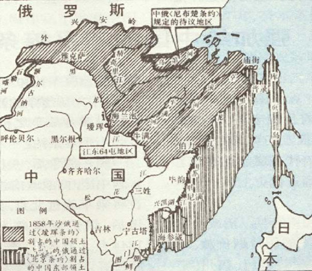
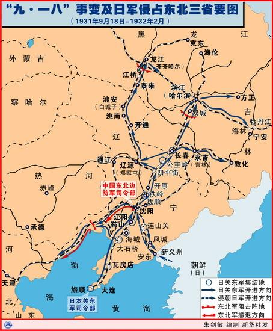
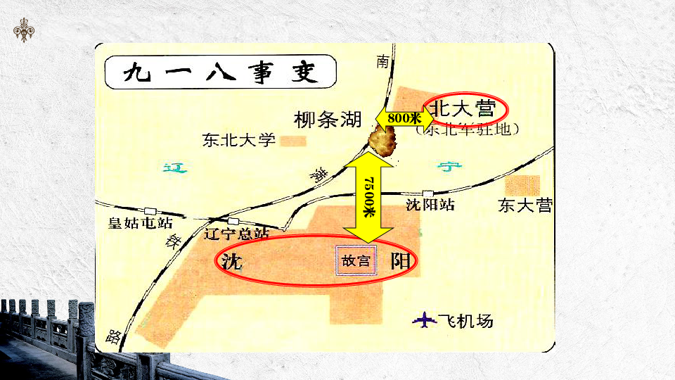

🌏 时空坐标
| 关键节点 | 时间 |
|---|---|
| 中俄瑷珲条约 | 1858年 |
| 中俄北京条约 | 1860年 |
| 中日甲午战争 | 1895年 |
| 日俄战争 | 1904–1905年 |
| 九一八事变 | 1931年9月18日 |
| 东北全境沦陷 | 约1932年初（历时4个月） |
一、故事的起点：1858年的东北版图

这是一张1858年的简化地图。彼时我们尚处大清朝，版图之外——北方是沙皇俄国，东侧临海是日本，半岛位置是朝鲜。而夹在中间的这片广袤黑土地，就是我们的东北。图上标注着几座日后将反复登场的大城：哈尔滨、长春、沈阳、大连。为何要从此处讲起？因为大清朝刚打完几次鸦片战争，焦头烂额之际，俄国趁机连哄带骗、软硬兼施，与清廷签下了两份改变东北命运的不平等条约——
📋 1858年《中俄瑷珲条约》 📋 1860年《中俄北京条约》
两张纸，割走一大片土地。从此，东北北侧边境线大幅南移，大片领土归入俄国版图。
二、铁路的诱惑：俄国人的”曲线扩张”

俄国人拿着新地图，脑子却嗡嗡作响 🌀
从欧洲本部到远东新获领土，需绕行万里苦寒之地——所谓”不毛之地”，即”不管你身上有多少毛都扛不住”的那种冷 ❄️。于是俄国人再度登门，向清廷提议：“兄弟，我在你这修条铁路咋样？”
清朝心里门儿清——“你屁股一撅，我就知道你要打什么喷嚏”——铁路权乃一国命脉，当时尚有底线，只欢迎小土豆，不欢迎老毛豆，一口回绝。
然而底线很快崩塌。大清做梦也没想到，自己竟被小日本在海上打败了。
三、甲午惨败与趁火打劫
1895年，中日甲午战争。清廷惨败，日本人堂而皇之接管了清朝的藩属国朝鲜，势力直抵鸭绿江畔。
俄国人拖着鼻涕又跑来了 🤧：“兄弟你看，小日本都趴你们家门口了！赶紧让我把铁路修起来，哪天你俩再干架，我好飞奔过来帮忙。”
这话有道理，但不多。可自己没本事，又能怎么办？只好咬牙应允——“你个糟老头子坏得很”。
俄国人立刻动工，修了一条横穿东北的铁路，名曰**“中东铁路”；其下再修支线，贯穿哈尔滨、长春、沈阳、大连**诸城。东北腹地，就此被俄国人以铁轨贯穿。
四、日俄相争：光脚的与穿鞋的
日本人更不乐意了 😤 原本想从朝鲜进一步蚕食东北，却让俄国人占了坑。心一横，直接冲到东北跟俄国人干了一仗——这就是把鲁迅先生气得弃医从文的日俄战争（1904–1905）。
结果出人意料：光脚的不怕穿鞋的，带壳的不怕长毛的——日本人竟把俄国人也打败了！
俄国一败，被迫将中东铁路南段转让给日本。此段铁路从此改名——
🚂 南满铁路
五、关东军的诞生：因”关东州”而得名
日本人拼死拼活，终于在中国抢到一条铁路，以及铁路周边的附属地。既得利益，当然要派兵保护。
这支部队的司令部设在辽宁省大连旅顺——这片区域曾是俄国人的租界，俄国人取名**“关东州”**。
⚔️ 关东军——因中国的”关东州”而得名，与日本本土的”关东”毫无关系。
这支部队，便是后来整个侵华战争的先头部队，也是日本在中国东北的绝对主力。
六、九一八：自导自演的爆炸 💥

此后多年，日本处心积虑图谋进一步侵占东北，却屡遭阻碍。
📅 1931年9月18日 📍 柳条湖
日本人自己炸毁一段南满铁路，反诬中国军队破坏，随即炮轰沈阳城。
这便是九一八事变，亦称柳条湖事件。
紧接着，关东军迅速扩散，席卷东北全境。约四个月，整个东北沦陷。长达14年的抗战，从此拉开序幕。
🎯 核心脉络图
1858–1860 俄国割地 → 觊觎铁路
↓
1895 甲午战败 → 朝鲜易主 → 俄国"趁火"修中东铁路
↓
1904–1905 日俄战争 → 日本夺南满铁路
↓
└→ 设关东州 → 驻关东军
↓
1931.9.18 炸铁路、诬中国军队、炮轰沈阳
↓
四个月 → 东北全境沦陷
↓
十四年抗战开始